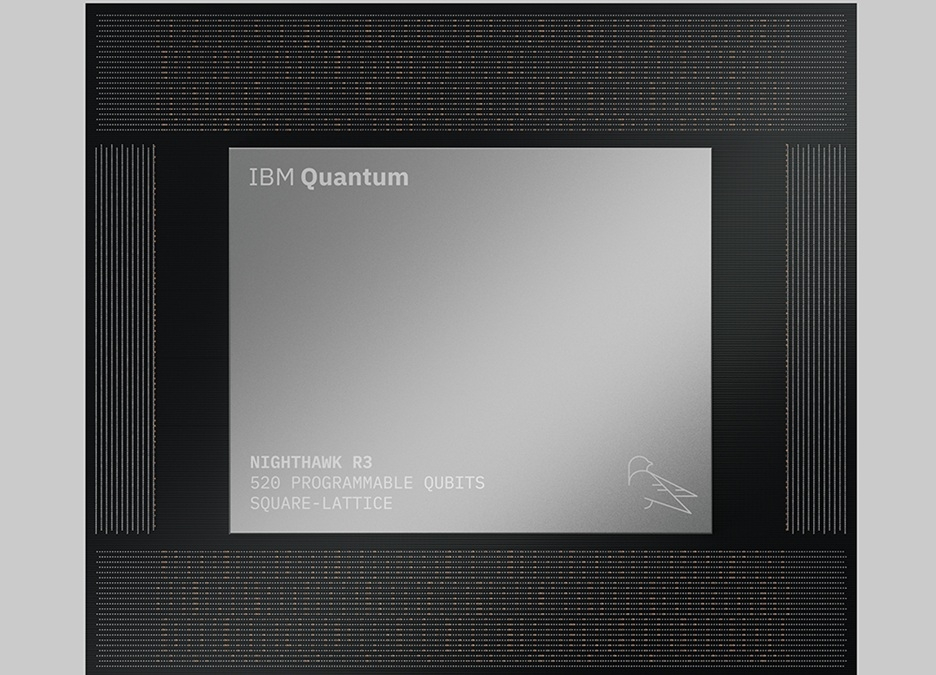
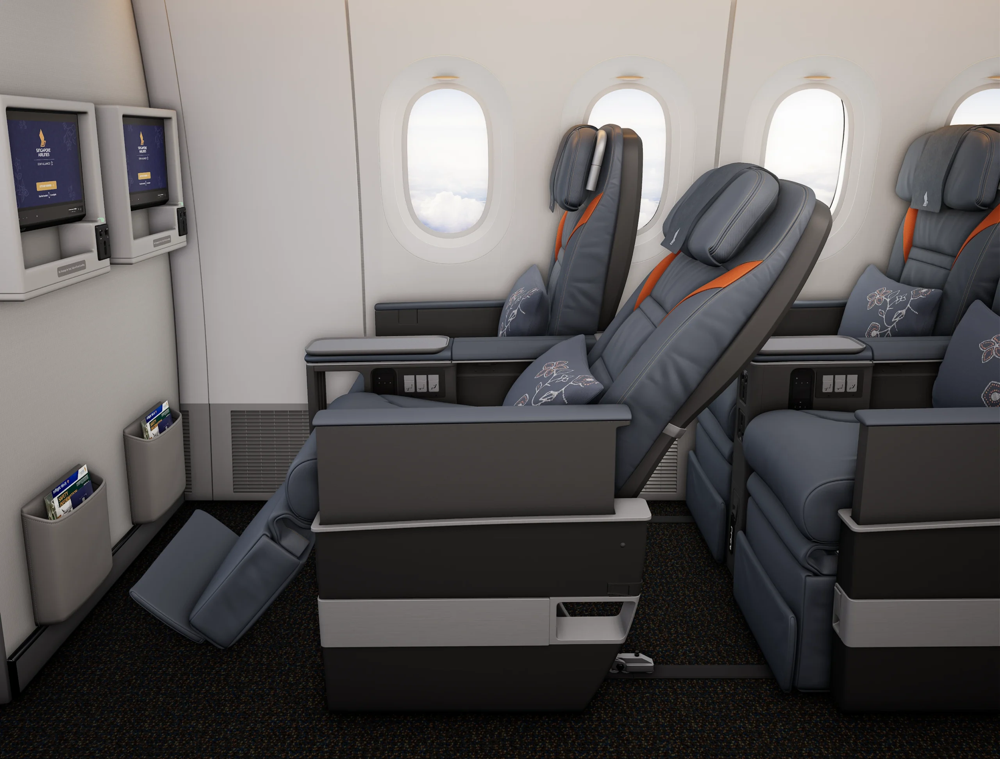

Morning routine Tech — Le brief du jeudi 12 novembre 2026
by Trinity
5 actualités · 3 min de lecture
Sélection arrêtée au 12 novembre 2026 à 17 h 44 (Paris). Collecte reprise et complétée ensuite ; les dates au jour près suivent la règle du jour ou de la veille, sans preuve d’antériorité à la seconde de coupure. Cinq sujets documentés, sans remplissage.
Apple & Google
1/5 — Gemini Live arrive sur CarPlay
Gemini Live dans l’interface CarPlay. — © Google
Dans son article publié le 12 novembre 2026, Presse-citron annonce l’arrivée de Gemini Live sur CarPlay : les utilisateurs d’iPhone peuvent converser avec l’assistant depuis l’écran de leur voiture. 1 L’intérêt est de pouvoir prolonger un échange vocal plutôt que d’enchaîner uniquement des commandes isolées. 1 La source décrit notamment la consultation des rendez-vous dans Google Agenda et des questions sur les messages de Gmail. 1
Pour commencer, il faut mettre à jour l’application Gemini sur l’iPhone, autoriser le microphone et avoir déjà utilisé Gemini Live au moins une fois sur le téléphone. 1 Une fois l’iPhone connecté au véhicule, l’accès se fait depuis l’application Gemini de CarPlay ; ces usages restent bien ceux d’un assistant conversationnel, pas la preuve d’une conduite automatisée. 1
Source : Presse-citron
IA & logiciels
2/5 — Kora veut placer l’IA locale au cœur du bureau Linux
Présentation de l’interface Kora reproduite par Génération NT.
Dans un article publié le 12 novembre 2026, Génération NT présente Kora, un environnement de bureau fondé sur NixOS qui veut intégrer les usages d’IA directement au système. 2 L’idée est de sortir les outils génératifs de leurs applications isolées pour en faire une composante du travail sur ordinateur. 2 Les tâches sont cloisonnées par AppArmor et l’utilisateur définit les accès accordés à chaque agent : cette séparation compte autant que les fonctions d’automatisation annoncées. 2
Le moteur Cortex doit répartir les calculs entre processeur central, circuit graphique et puce neuronale. 2 La couche d’inférence Lemma, dérivée de llama.cpp, est également présentée comme capable de mobiliser d’autres ordinateurs du réseau local. 2 Ce sont ici des choix d’architecture rapportés par la source, et non les résultats d’un essai indépendant du système. 2
Source : Génération NT
Hardware & gadgets
3/5 — IBM mise sur deux puces quantiques reliées pour dépasser 1 000 qubits

Visuel du processeur Nighthawk r3 dans l’article de Génération NT.
Génération NT rapporte le 12 novembre 2026 l’annonce du processeur quantique IBM Nighthawk r3, doté de 520 qubits programmables. 3 La prochaine étape annoncée consiste à relier deux unités en 2027 pour former un ensemble de 1 040 qubits. 3 L’enjeu n’est donc pas seulement d’agrandir une puce : il s’agit de faire fonctionner plusieurs circuits comme un système cohérent. 3
Le dispositif intègre dix coupleurs inter-puces destinés au transfert des états quantiques. 3 La source cite une fidélité de transfert de 99,3 % obtenue sur la génération r1, avec un objectif de 99,9 % : ce dernier chiffre reste une cible, pas une performance acquise du futur assemblage. 3 Le cap de 1 040 qubits appartient lui aussi à la feuille de route pour 2027, et ne doit pas être confondu avec une machine déjà livrée. 3
Source : Génération NT
Photographie & vidéo
4/5 — Tamron débloque enfin la mise à jour du 28–75 mm G2 pour Nikon Z
Dans une note publiée le 12 novembre 2026, Tamron annonce enfin la disponibilité du firmware du 28–75 mm F/2,8 Di III VXD G2, modèle A063, en monture Nikon Z. 4 La mise à jour était reportée depuis le 10 juin 2026 : la nouveauté est sa disponibilité, plutôt que l’annonce d’un nouvel objectif. 4 Elle permet d’utiliser les nouvelles fonctions de Tamron Lens Utility et de sa version mobile en version 5.0, ainsi que TAMRON-LINK. 4
Le périmètre est précis : cette note vise la variante Nikon Z de l’A063 et ne permet pas de conclure que toutes les montures ou tous les objectifs Tamron reçoivent le même firmware. 4
Source : Tamron
Aéronautique
5/5 — Singapore Airlines précise l’aménagement de ses futurs 777-9

Présentation des sièges premium economy illustrant le projet de cabine. — Photo: Singapore Airlines
Aviation A2Z détaille le 12 novembre 2026 la configuration prévue par Singapore Airlines pour ses futurs Boeing 777-9 : 300 passagers répartis dans quatre classes. 5 Le plan comprend six suites de première classe, 54 sièges affaires, 36 places de premium economy et 204 sièges économiques. 5 Avec 96 places dans les trois classes supérieures, la compagnie met clairement l’accent sur les cabines premium. 5
La source indique que Singapore Airlines a 31 Boeing 777-9 en commande, ce qui donne une portée industrielle à ces choix d’aménagement. 5 Il s’agit d’une configuration projetée : les passages consultés ne permettent pas d’annoncer une date de mise en service de ces appareils. 5
Source : Aviation A2Z
ceci a été le brief de jeudi